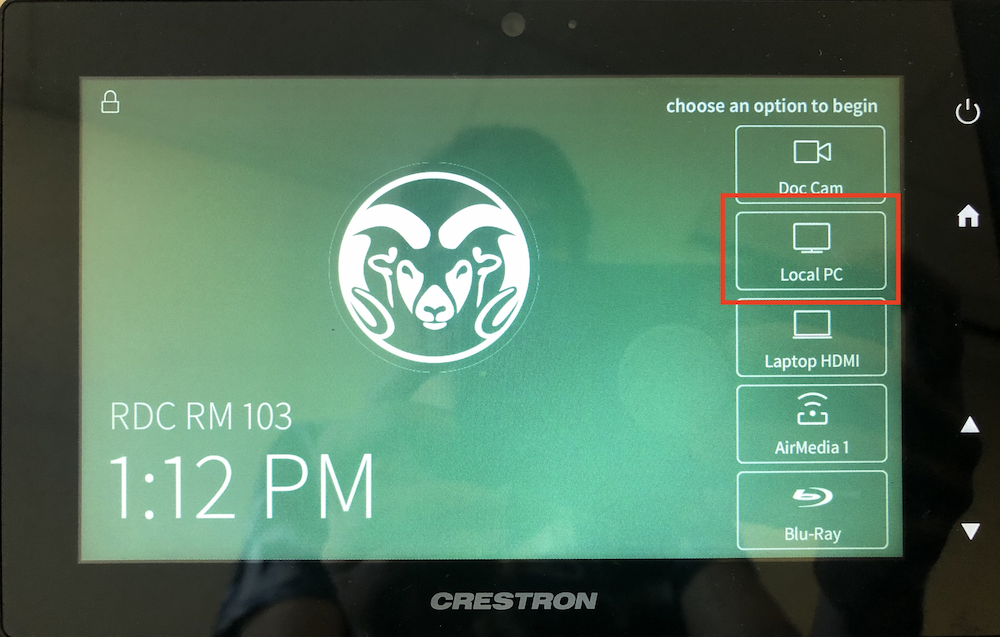
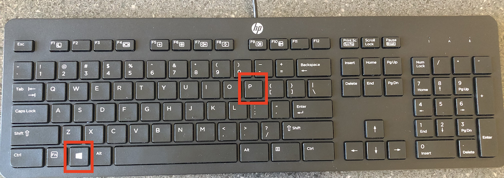

Connecting to the Projector
This article explains how to connect to the projector from the teacher podium computer.
Step 1
Identify the Crestron control panel. It is a touch-screen device on the teacher podium with various controls. Tap the "Local PC" option. This will cause the projector to power on and receive input from the computer. Please do not use the projector remote controller.
Step 2
Identify the Windows key at the bottom left of the keyboard. Then identify the letter P key at the top right. Hold both at the same time to make the display options appear.
Step 3
Select a display option. Duplicate will cause the projector to show exactly the same thing as the computer monitor. Extend will cause the projector to act as a second monitor. If you choose Extend, you will have to drag your windows from one screen to the other.
Step 4
Please turn off the projector when you are done.
That's it!
We hope this tutorial helps. Please contact us with feedback.